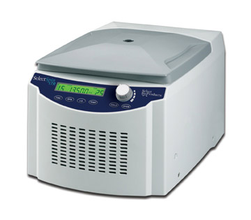

SelectSpin™ R Refrigerated Microcentrifuge
An intuitive control panel with liquid crystal display,
brushless motor, and cooling capacity to spare are
just a few of the features found in the SelectSpin R
refrigerated microcentrifuge.
The user-friendly control panel combines digital
and analog control to make setting of operating
parameters quick and easy. Speed can be set in
either rpm or RCF. Operation of the unit can be
timed, continuous, or momentary, using the “quick”
button. Vibration free operation is ensured the
SelectSpin R’s motor isolation system. In the event
of a significant imbalance, excessive vibration
is electronically detected and operation of the
centrifuge is automatically stopped. Deceleration
at the end of a run is very quick, but will not disrupt
samples.
The powerful refrigeration system in the SelectSpin R maintains temperatures as low as -10°C and can reach 4°C from room temperature in less than 8 minutes. A uniquely designed, easy access 24 x 1.5/2.0 ml rotor is supplied with the centrifuge. Individual tube slots in the solid aluminum rotor support tubes along their length and contain the sample in the event of tube failure. Adapters are available for smaller tubes as well as PCR strips. The rotor is seated on a tapered shaft which facilitates easy removal for cleaning and
autoclaving. |
Specifications
Tube capacity
24 x 1.5/2.0 ml tubes
Speed range
500 - 13,500 rpm
Maximum RCF
17,200 x g
Temperature range
-10º to +40ºC
Timer:
0.5 to 99 minutes or continuous, momentary button
Dimensions: (W x D x H )
30 x 40 x 25 cm or 11.75 x 16 x 9.8 "
Weight :
23 kg/50 lbs
Electrical:
120V or 230V, 50/60 Hz
Ordering Information
SBC250R SelectSpin R Refrigerated Microcentrifuge, with 24 place rotor, 120V
SBC250R-2 SelectSpin R Refrigerated Microcentrifuge, with 24 place rotor, 230V, EU power cord
SBC250R-3 SelectSpin R Refrigerated Microcentrifuge, with 24 place rotor, 230V, UK power cord
C2400-SS Adapter for 2 strips of 8 x 0.2 ml tubes or 16 individual 0.2 ml tubes
C1205 Adapters for 0.5/0.6 ml tubes, pack of 6
C1222 Adapters for 0.2 ml tubes, pack of 6 |
 |